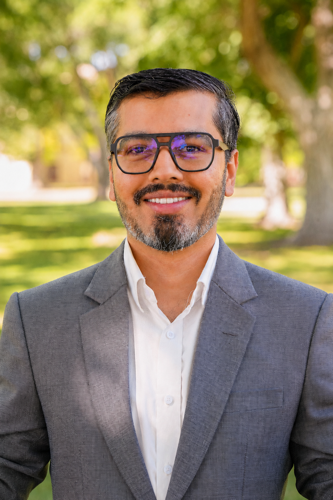

Applied Economist
Ph.D., Economics — University of New Mexico, 2023
Assistant Teaching Professor
New Mexico Institute of Mining and Technology
"I grew up in a subsistence farming household in Nepal. The externalities of agricultural production are not abstract to me."
I am an applied economist at New Mexico Institute of Mining and Technology, where I hold an appointment in the Department of Computer Science and Engineering. My research sits at the intersection of environmental health and agricultural economics. I use atmospheric dispersion modeling, quasi-experimental methods, and spatial econometrics to estimate the social costs of pollution that markets leave unpriced.
My job market paper — forthcoming in the Journal of Agricultural and Resource Economics — estimates the health and economic damages from dairy CAFO air pollution in New Mexico. A second paper on the welfare costs of sub-threshold ozone exposure is under revise-and-resubmit at Applied Economics Letters. I am a Co-PI on an NSF-funded project ($250,000) applying machine learning and satellite imagery to spatial environmental risk modeling.
Before graduate school I worked as a data analytics consultant at Vizient, Inc., and before that as a data analyst at Facts Research and Analytics in Nepal. I hold a Ph.D. and M.A. in Economics from the University of New Mexico and an M.B.A. from Southeast Missouri State University.
At NMT — a Hispanic-Serving Institution serving many first-generation students — I carry a 4:4 teaching load spanning principles of economics, engineering economics, managerial accounting, and graduate data analytics. I am interested in pedagogy that makes economic reasoning concrete for engineering students, which led me to develop a suite of browser-based classroom simulations. I presented at an IHS "Energy Innovation for an Abundant Future" workshop and attended the Southern Economic Association Annual Meeting as session chair and paper presenter.
I welcome inquiries from students, prospective collaborators, and search committees. I am happy to discuss research in progress.